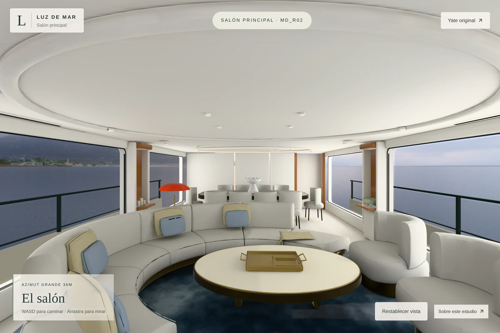
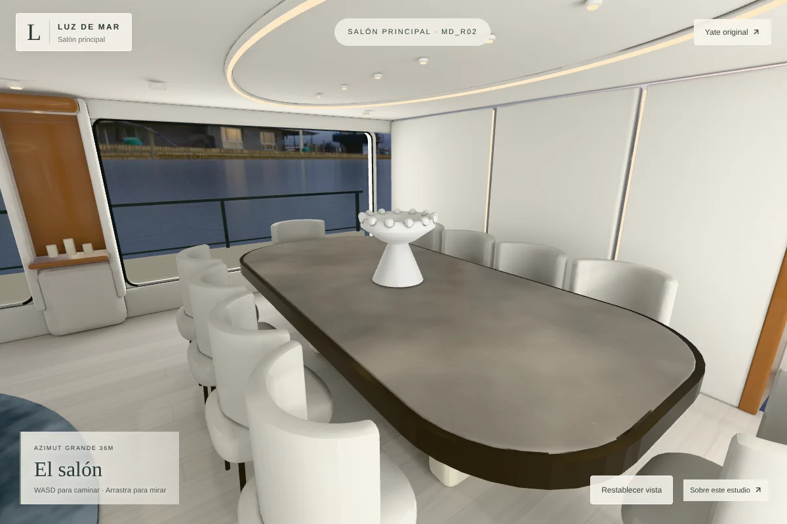
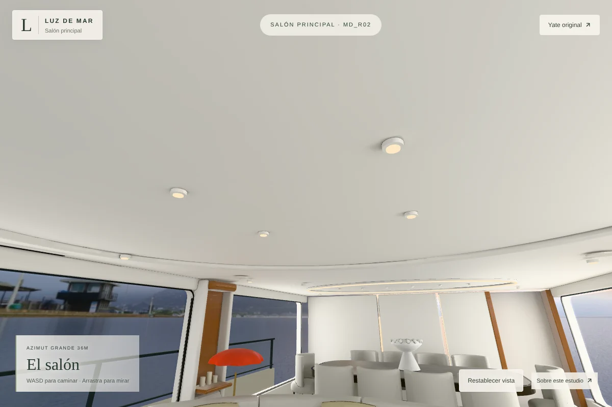
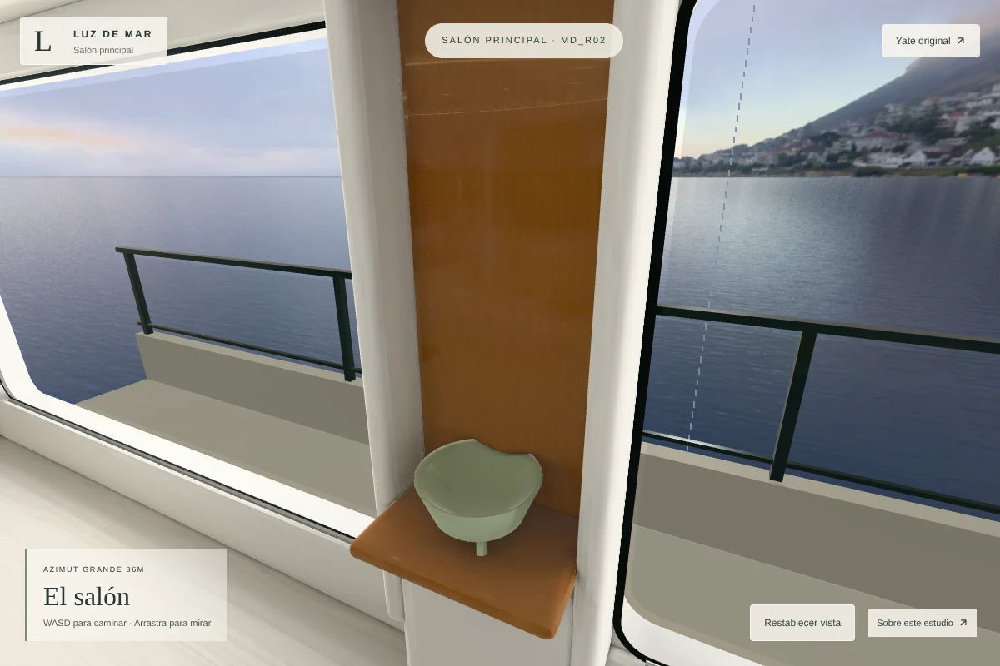
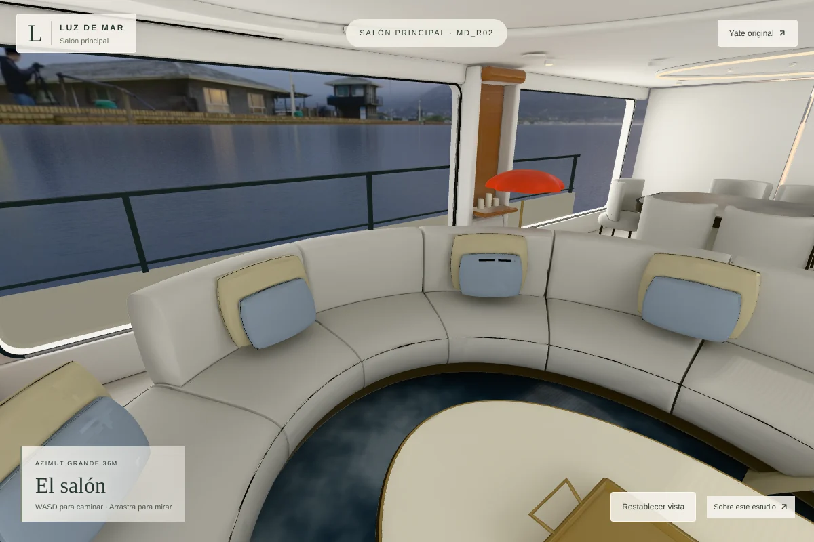
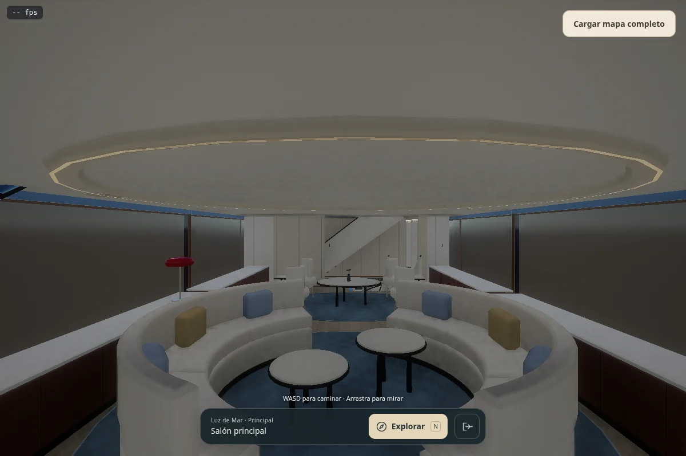
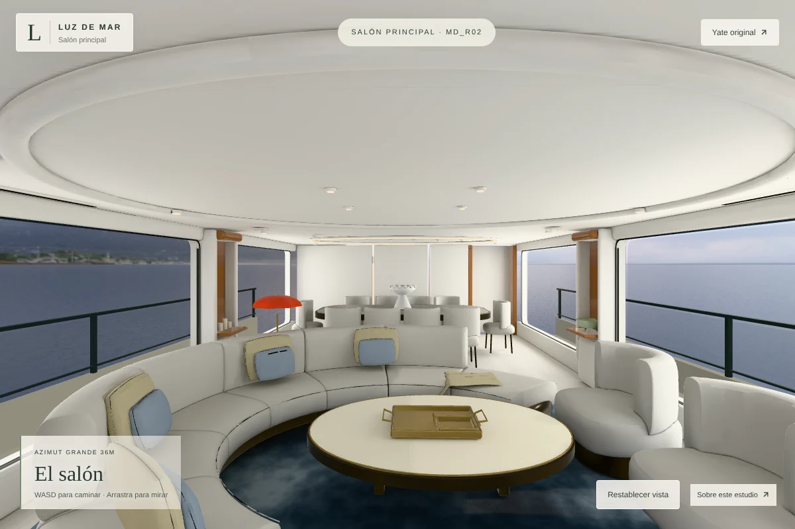
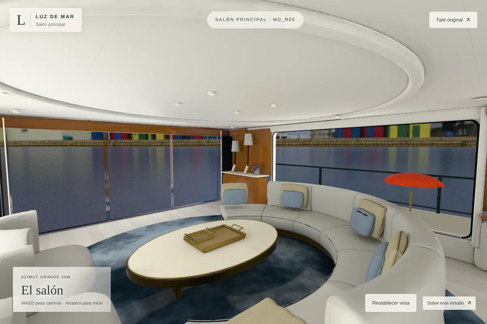

← Volver al salónEl salón, visto de cerca
Un estudio del salón principal y su comedor, guiado por la visita 360° del Azimut Grande 36M. Esta versión corrige la distribución y reconstruye sus piezas en Blender. Las medidas y los acabados siguen siendo estimaciones visuales.
Previsualización en desarrollo. La reconstrucción todavía presenta diferencias con la visita y no se declara equivalente al realismo del ejemplo del dormitorio.
Referencia 360° ↗Escena editable de BlenderAtlas HDR originalesGLB optimizado

Vista del recorrido independiente. El yate original conserva sus archivos.Distribución contrastada
Las vistas laterales y el plano de la propia visita aclaran detalles que la primera versión interpretaba mal: hay una pareja de nichos, el mueble con dos lámparas está a babor, existe un panel de madera de altura completa a estribor y el comedor tiene diez sillas alrededor de una mesa transversal. El óvalo luminoso del comedor pertenece al techo.
El sofá y sus cojines incorporan paneles, bordes cosidos y pliegues suaves. El plafón ovalado del salón tiene un centro retranqueado visible. Las juntas del suelo y techo se representan en materiales; se han eliminado las mallas extremadamente finas que generaban puntos sobre el mobiliario.
Inventario de 28 grupos de detalles · Correcciones, evidencia y diferencias pendientes

Comedor transversal y mobiliario de referencia.
Techo del salón: relieve, centro retranqueado y luminarias.
Veta vertical y reflejos locales. El cuenco ocupa el nicho de estribor.
Tapicería y cojines. Los tejidos son aproximaciones propias.Comparación con el modelo anterior
Ambas imágenes usan la misma posición, dirección, campo vertical de 72°, resolución de 1200 × 800 y DPR 1 del renderizador. Comparan los dos modelos digitales; no constituyen una calibración de cámara frente a la fotografía de la visita.

Yate original, conservado en su página.
Reconstrucción desde la misma cámara.
Vista hacia la entrada y el mueble de babor.Ver el diagnóstico geométrico de los puntos · Datos del diagnóstico
Mediciones y funcionamiento
El informe registra secuencias realmente dibujadas por Chromium con ANGLE SwiftShader, resolución fija y adaptable, llamadas de dibujo, triángulos, descargas y recursos después de recargar. El equipo de prueba usa un procesador de nube y renderizado por software. El informe incluye el yate original con resolución fija; su aplicación WebGPU carga el yate completo y esta versión WebGL2 carga solo el salón. No se atribuye la diferencia de tiempos únicamente al renderizador.
Estas mediciones verifican el funcionamiento y la estabilidad de recursos. Los tiempos de este renderizador por software no acreditan 60 fps en ordenador ni 30 fps en móvil. Falta medir esas metas en dispositivos físicos.
Informe de ejecución y recursos · Medición del yate original · Hashes SHA-256 de los activos · 629 archivos del yate original
Fuentes y límites
La visita identifica un Azimut Grande 36M; no verifica que sea específicamente Luz de Mar. Su distribución y sus detalles visibles guían esta versión. Las dimensiones, las partes ocultas, las posiciones exactas y la identidad de los materiales son estimaciones. La envolvente procede del modelo anterior. El exterior combina un HDRI costero CC0 con una superficie de agua creada en Blender. Es ilustrativo y no reproduce el fondeadero de la fotografía.
Dos atlas HDR de 2048 × 2048 contienen el transporte ambiental. El sol se calcula por separado y sus sombras fijas se reutilizan. Tres capturas locales aportan reflejos interpolados; estos reflejos estáticos no sustituyen todos los efectos que produciría la geometría reflejada en tiempo real. Los mapas de superficie usan KTX2 y la geometría meshopt. Los dos atlas de luz conservan su precisión HDR en EXR y ocupan 64 MiB en la GPU. El navegador dibuja cuando hay cambios y adapta la resolución al movimiento.
Las fotografías originales conservan los derechos de sus autores y no se redistribuyen como texturas. La madera utiliza relieve CC0 y el cielo costero procede de Poly Haven. Los demás materiales y la geometría se han creado para este estudio.
Fuentes, autores y licencias · Abrir el yate original